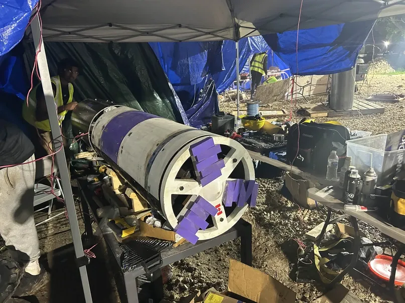
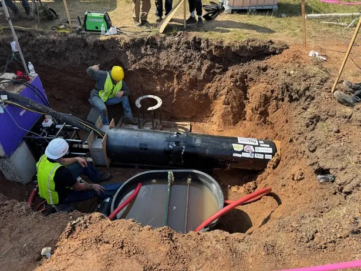
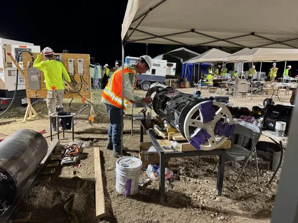

Design team · 2024 to 2025
Tunnel boring machine
I led four people on the chassis, propulsion and steering of WatDig's tunnel boring machine, which competed at NaBC 2025.
- My role
- Mechanical Team Lead, Chassis & Propulsion
- When
- May 2024 to 2025
- Tools
- Onshape, hand calculations, FEA, hydraulics
- 4
- people on my subteam
- 3 kNm
- steering torque
- NaBC
- 2025, Texas


The team
WatDig is Waterloo's team for The Boring Company's Not-a-Boring Competition, where student teams build tunnel boring machines. I led a team of four on the chassis, propulsion and articulation (steering) systems for the 2025 machine.
Articulation system
The articulation joint is how the machine steers. I designed a motorized and hydraulic system based on a Stewart platform, with hydraulics for power and sensors for control, that steers against 3 kNm of torque. I worked out the steering force with hand calculations and FEA to set the hydraulic actuator specs, and modelled the system in Onshape.
I also designed and made several of the structural parts. The machine competed at NaBC 2025 in Texas, and the team raised more than $10,000 in sponsorship along the way.



